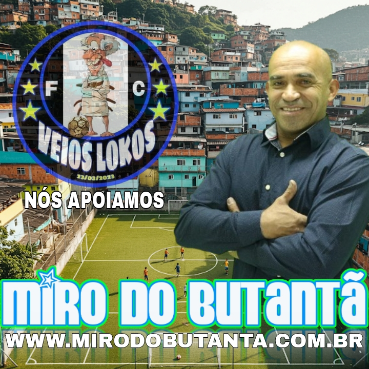
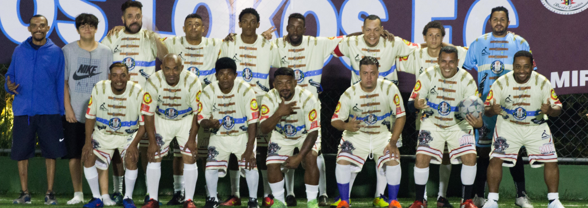
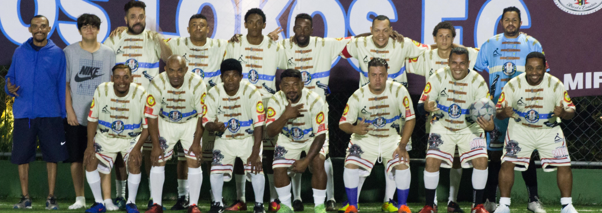

O esporte tem o poder de transformar realidades, unir
pessoas e fortalecer valores essenciais à convivência
social.
Em muitas comunidades, ele vai além das quadras
e campos tornandose um verdadeiro agente de inclusão e
cidadania. No bairro do Butantã e nas regiões próximas
ao Rio Pequeno, um nome se destaca por seu
comprometimento com essa causa, Miro do Butantã.

 

Miro acredita que cada criança com uma bola nos pés tem menos chance de se perder no caminho da violência e mais oportunidade de encontrar um futuro digno. Com sua dedicação, ele mostra que o esporte é uma ferramenta de paz, educação e cidadania.